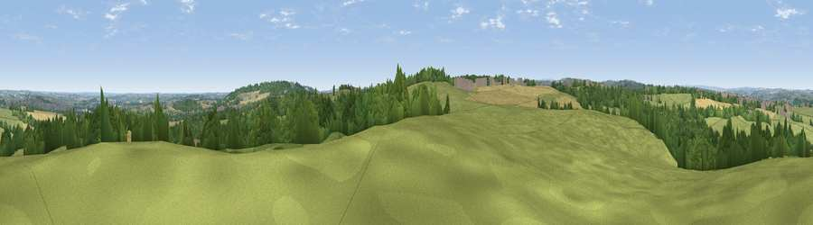

Viewpoint near West Bretton
#27087 in England · top 47% of its area beats it · near West Bretton · access?Where it is
The exact computed spot (SE 28475 15025). Click the marker for map links.
Public access: no public right of way or access land is recorded at this exact spot — it may be on private land. Computed from Natural England's CRoW access layer and OpenStreetMap rights of way — not the legal definitive map. Always verify locally.
The view, rendered

A 360° render of this exact spot computed from the terrain model, tree cover and land cover — summer colours, afternoon light, calibrated against photographs of famous viewpoints. Real trees, hedges and buildings will differ in detail.
The panorama
Grey silhouette: terrain skyline in each direction (720 bearings, Earth curvature and refraction included). Dashed green: skyline with trees (+15 m) and buildings (+8 m) as obstacles. Blue strip: how far the ground is visible on each bearing.
Where the view opens
Wedge length = distance to the farthest visible ground on that bearing (vegetation-aware). Rings at 10, 25 and 50 km.
What fills the view
48% grassland · 30% woodland · 17% cropland · 5% built-up
Angular shares of the visible panorama (visual magnitude), not map area. Landscape diversity 0.51 (0–1 Shannon).
Key numbers
More beautiful places nearby
The staircase of upgrades: each row has a higher view potential than everything closer. Driving times are estimates from straight-line distance, calibrated against real road routing — check an actual route before setting out.
| Place | Direction | Drive | Score |
|---|---|---|---|
| Viewpoint near Hollingthorpe | ESE · 3 km | ~7 min | 60.9 |
| Viewpoint near Woolley | SE · 4 km | ~10 min | 66.2 |
| Viewpoint near Grange Moor | W · 6 km | ~13 min | 69.8 |
| Viewpoint near Hoylandswaine | SSW · 11 km | ~20 min | 71.8 |
| Viewpoint near Hoylandswaine | SSW · 11 km | ~21 min | 72.7 |
| Viewpoint near Jackson Bridge | SW · 13 km | ~24 min | 73.5 |
| Viewpoint near Wharncliffe Side | S · 18 km | ~32 min | 75.0 |
| Viewpoint near Wharncliffe Side | S · 19 km | ~32 min | 75.2 |
53.63098, -1.57088 · source: screening · position refined by local search. Computed location — check access rights before visiting.